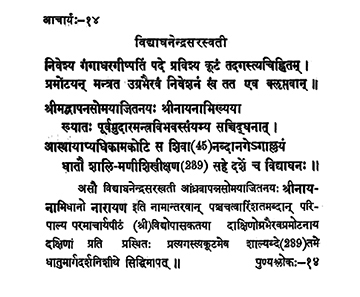

14. आचार्य - 14 - विद्याघनेन्द्रसरस्वती
निवेश्य ••• कॢप्तवान् ॥ २८ ॥
श्रीमद्वापन्न ••• विद्याघनः ॥ २९ ॥
Having entered the peak named Agastya after established Gaṅgādharagīṣpati in the ācārya pīṭha and after subduing the Ugrabhairava through mantra, he stayed there itself.
Son of Śrī Boppanna, known as Śrī Nāyana earlier, that Vidyāghana having got initiation from Saccidghana, endowed with enormous occult powers, having adorned the principal seat of Kāmakoṭi for forty-five years, He merged (in Self) on the new moon day of the month of Mārgaśīrṣa in the year Dhātu of Śālivāhana era 239.
